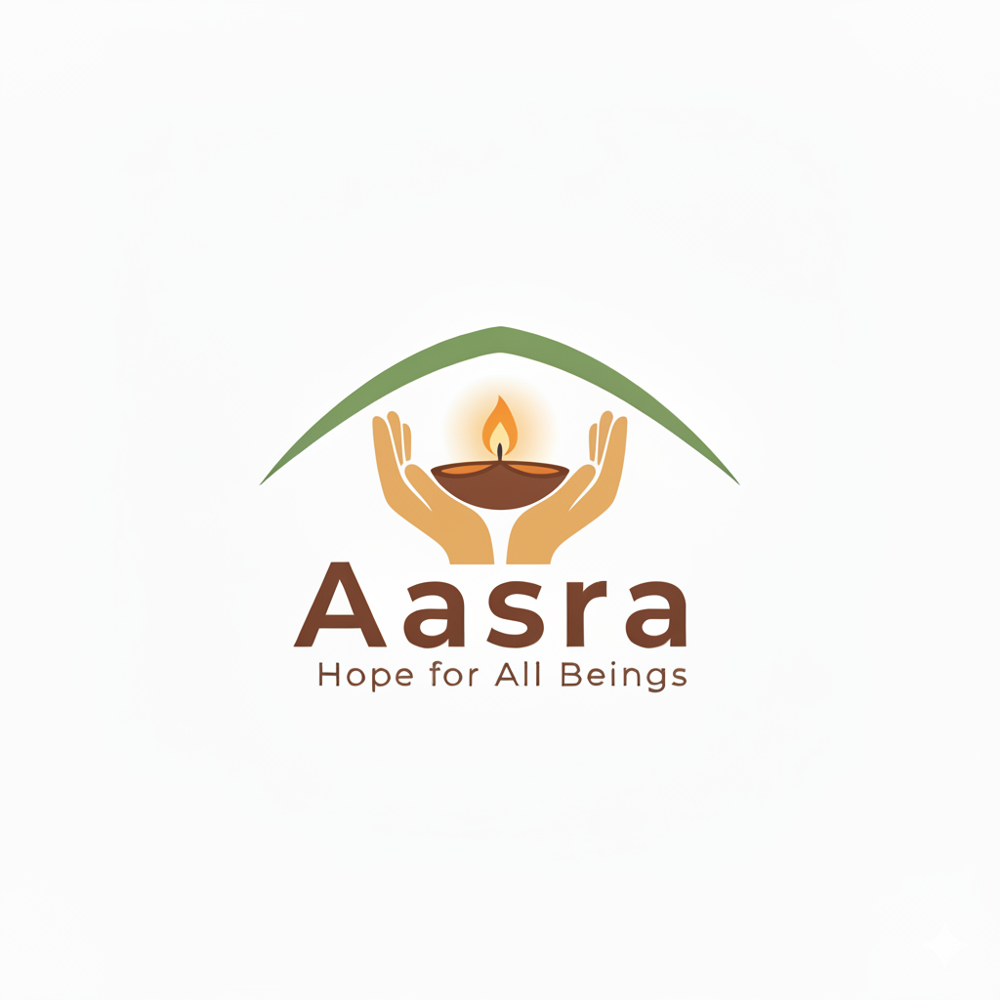
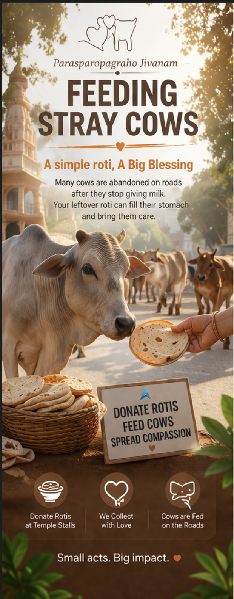
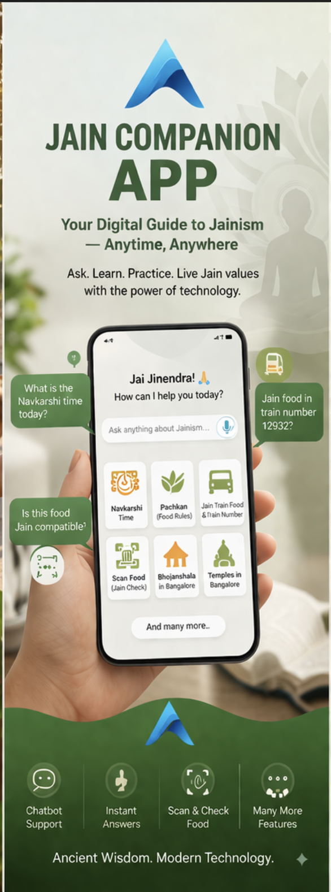

Aasara - Hope for All Beings | Connecting Jainism Digitally
Compassion in action. Technology with purpose. We build digital initiatives that make Jain values accessible to everyone.


Compassion in action. Technology with purpose. We build digital initiatives that make Jain values accessible to everyone.

Parasparopagraho Jivanam. We collect rotis from devotees and feed abandoned cows, promoting compassion and Jeevdaya.

Digital Jain assistant with Navkarshi time, Pachkan guidance, Jain food scanner, train food support and more.
Preserve the sanctity of Giriraj. Promote clean pilgrimage and make it plastic free.
Your time, skills, and kindness can create a lasting difference.
pakshal94@gmail.com